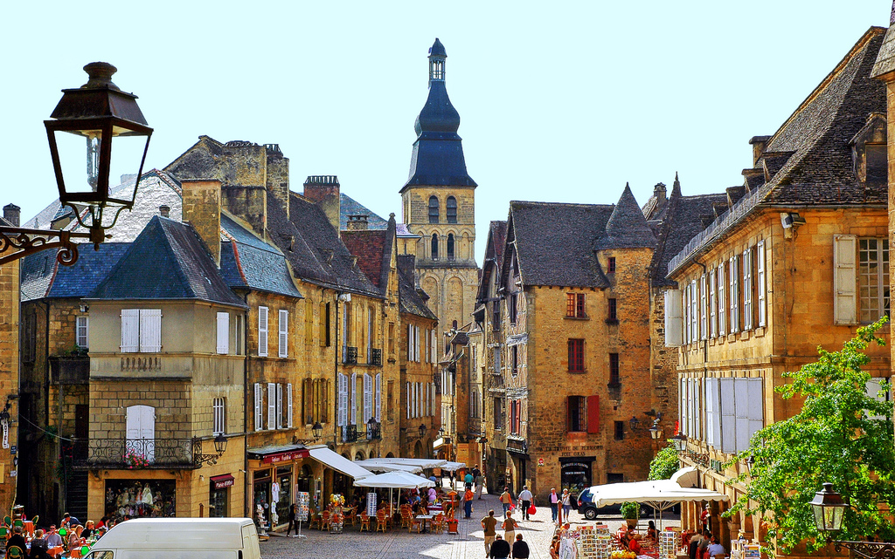
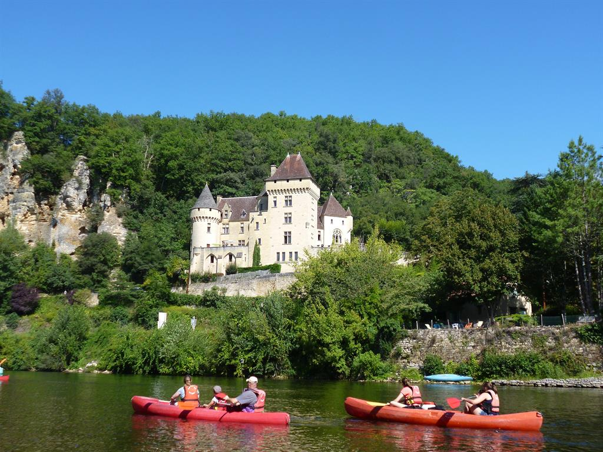
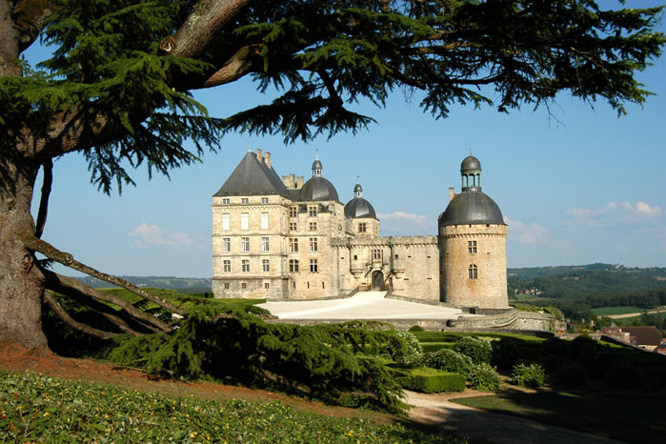

Language tuition for adults
Tuition
At the Dordogne Language Studio you will engage in immersive one-to-one tuition tailored to your specific language learning goals, whether they be academic, professional or personal. We are also able to cater for small groups of similar levels. Your tutor Shayne has over 30 years experience teaching in business schools, universities and for private clients.

Cultural activities
After every intensive morning of study you will get the chance to put your language skills into practice in a more informal setting, exploring the beauty and heritage of the Dordogne with a cultural programme specially tailored to your interests. Activities include tours of local treasures such as the prehistoric Lascaux cave paintings, or the beautifully preserved medieval town of Sarlat-la-Canéda, local art or cookery classes, canoeing down the Dordogne river and much, much more.
- 

- 
- 
Accommodation
During your stay with us you will be put up in one of several comfortable local hotels such as Hôtel Bristol or Hôtel des Barris. You will be within walking distance from the language studio but with the option to retire in privacy after a stimulating and tiring day of language and culture!
Prices:
Prices include tuition, programmed cultural activities, breakfast and lunch.
1800 € for one week